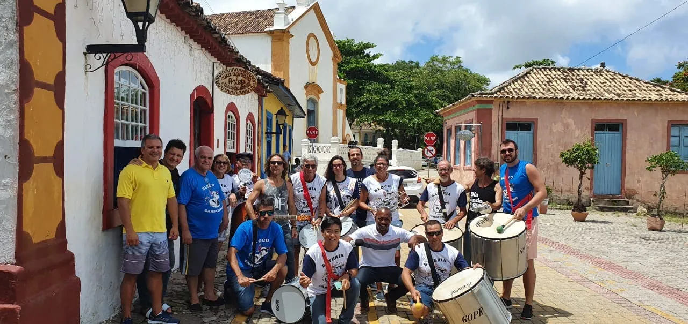

Segurança no local
De acordo com um dos administradores do evento, Renê Barão, a expectativa é de que cerca de 50 mil foliões passem diariamente no bairro, e 30 mil se mantenham na festa simultaneamente. A folia acontece entre as ruas de Santo Antônio, com um ponto principal na orla.
— Muita festa e muita alegria com responsabilidade. Teremos mais de 100 seguranças no controle do perímetro, ajuda da Polícia Militar e Guarda Municipal, e vamos proibir entrada de vidro e armamento. Serão 29 bares, 19 lanchonetes e uma praça de foodtrucks. Esperamos que todos consigam beber com segurança e responsabilidade — diz um dos organizadores.
Para quem optar por maior conforto em meio à folia, existem algumas opções de espaços pagos à disposição, entre eles a Arena Santo Antônio, e os camarotes Desce Mais Uma e Balança Mas Não Cai. A organização deve divulgar informações em breve.
A área que ocorre a festividade será ampliada, mas mantendo a segurança, garante organização. “É proibido o ingresso de pessoas com objetos pontiagudos e a Policia Miliar realizará revista nos participantes”, conta o presidente da Avante.
